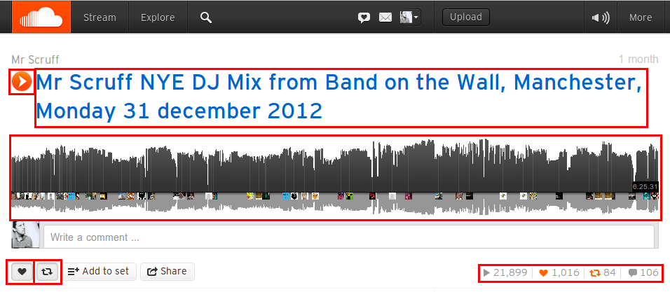
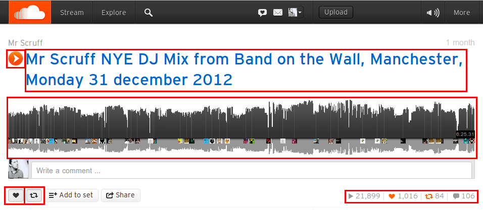
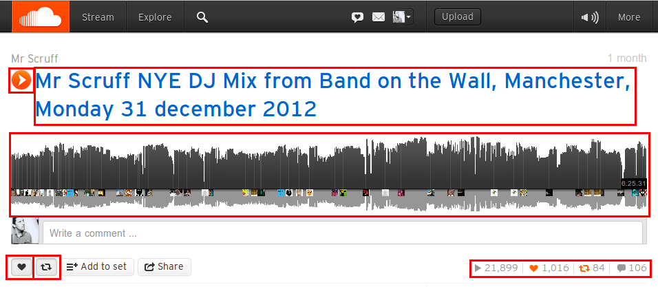

Going full craz
Nick Fisher @spadgos
talk about new soundcloud, what it is, what our (public) numbers on the site are, allows anyone to upload the music they've created and the sounds they've recorded
Full craz?
backstage.soundcloud.com/2012/06/building-the-next-soundcloud/
Hacker news...
wrote blog post, hacker news said this, and i was like
MLOC?
0.03 MLOC. Whatevs.
Coming up
Asynchronous programming
Data management on the client
Performance war story
Asynchronous Programming
Callback Hell
This is something which is often brought up as a pain point for large applications.
This is callback hell
fs.readdir(source, function(err, files) {
if (err) {
console.log('Error finding files: ' + err)
} else {
files.forEach(function(filename, fileIndex) {
console.log(filename)
gm(source + filename).size(function(err, values) {
if (err) {
console.log('Error identifying file size: ' + err)
} else {
console.log(filename + ' : ' + values)
aspect = (values.width / values.height)
widths.forEach(function(width, widthIndex) {
height = Math.round(width / aspect)
this.resize(width, height)
.write(filename, function(err) {
if (err) {
console.log('Error writing file: ' + err)
}
});
}.bind(this))
}
})
})
}
})Source: callbackhell.com
This is NodeJS, applies equally to browser JS too: lots of events, UI AJAX, or non-blocking Node. The reason this is an issue, beginners/intermediate this is a natural solution to the problem of nested async calls.
The good news is that there are plenty of different ways to address it, but I'll just discuss what we use.
Promises
(futures, eventuals, or deferreds), are not a new concept. 1970s
A promise is simply a way of interacting with an asynchronous action. The action can be completed at some point, or it might fail. In practice, it is essentially a callback aggregator, where any number of callbacks can be added to a queue to be executed in the event or success or failure.
Which implementation?
You're Missing the Point of Promises domenic.me/2012/10/14/youre-missing-the-point-of-promises
There are many implementations for JS. These 3 are all excellent and fulfill the CommonJS spec, whereas jQuery's is broken and doesn't cover some of the more powerful use cases for promises. You can read more about this in Dom's gist. Guess which one we're using? The good news is that the basic parts of promises which it does do can give you some really great benefits, and I'll talk about those. Just remember that promises can do a lot more than what I'm showing you.
The Promise Contract
(The promise promise?)
There is one resolution or rejection.
Callbacks are executed once .
Promises remember their state.
Source: howtonode.org/promises .
2. Important to know that callbacks added after the deferred are resolved or rejected are executed immediately
Basic interface
Adding callbacks:
.done() .fail() .always()
Modifying state:
All return this for chaining.
In browser programming, the most common example of an asynchronous action is the AJAX request. It takes some amount of time, it might complete successfully, it might be cancelled by user interaction or the server might not respond how we wanted, for example, with a 500 or 404 status. By using promises here, it means that individual, separate parts of your application can react to either success or failure without knowing about other components and the callbacks they have attached.
function sendRequest(url) {
return $.get(url).fail(function () {
logError('something went wrong');
});
}function loadUser(id) {
var deferred = $.Deferred();
sendRequest('users/' + id)
.done(function (userData) {
deferred.resolve(new User(userData));
})
.fail(deferred.reject);
return deferred;
}function showUserDetails(id) {
loadUser(id)
.done(function (user) {
someView.render(user);
})
.fail(errorView.render);
}
Extension
Caching AJAX requests
var cache = {};
function sendRequest(url) {
if (!cache[url]) {
cache[url] = $.get(url).fail(logError);
}
return cache[url];
}Mocking for tests
function sendRequest(url) {
return $.Deferred().resolve({ id: 123, name: 'Test user' });
}
Saying before, promises remember their state.
- when this is called for the second/third time, that request might still be going, or it might have failed, or anything, it doesn't matter because the interface is exactly the same.
- Tests: mock out the async parts to make your tests run synchronously
More than AJAX
function login() {
var deferred = $.Deferred();
if (isLoggedIn) {
deferred.resolve(); // done already!
} else {
showFacebookPopup(); // this would have its own flow
loginCallback = function (success) {
deferred[success ? 'resolve' : 'reject']();
};
}
return deferred;
}
Think about a login process. It's asynchronous to your program flow, but not just because of AJAX - the time the user spends entering their details, or clicking on the forgot password link or whatever, they're all part of a single action which can result in either success or failure.
In use...
function followUser(id) {
var deferred = $.Deferred();
login()
.fail(deferred.reject)
.done(function () {
$.post('users/' + id + '/follow')
.done(deferred.resolve)
.fail(deferred.reject)
});
return deferred;
}Follow
followButton.on('click', function () {
this.setState('selected', true);
followUser(this.model.id).fail(function () {
this.setState('selected', false);
}.bind(this));
});
This is an action which also requires the user to be logged in, so there's two nested asynchronous flows here. Start with login: what it does, how it does it, or even if it's already done is completely meaningless here, but if it fails, we know we can't continue.
Summing
Up
This style of coding makes it really easy to work with asynchronous flows, even when it's nested several layers deep, and with its clean interface, making a responsive UI which is agnostic to the business logic underneath is simple.
The long running app
Challenges
Opportunities
Faster loading
Better experience
This is something many webdevs coming from a 'more traditional' ruby/php background don't need to deal with very much. One request = one page and everything is cleaned up afterwards.
Leaks
var cache = {};
function sendRequest(url) {
if (!cache[url]) {
cache[url] = $.get(url).fail(logError);
}
return cache[url];
}
how much of a problem it is is individual to your app, depending on how long your code will be running for, and the amount of data you're dealing with.
SoundCloud sessions can go many hours without a refresh, and we pull in lots of data via AJAX, so something like this would very quickly kill your browser. However, in other applications, this might actually be very efficient if you only need to make a couple dozen requests in the lifespan of the app. I've seen one client-side application where it never throws away references to the entire page of DOM elements, and that has worked out fine, since there were only a limited number of pages needed for that app.
code from before, there is an obvious ML here, since the requests along with the full data of each response is stored for the life of the program.
Sharing is caring
Depending on how you structure your app, you will almost definitely have some views of the same data. Think about a page which might list products, and then when you click through you get a details page. These two pages both show a view of the same data, just in different formats. If they were to be fetching their own data that would be grossly inefficient, so we need to find a way for them to share.
Many views, one model

Identity map
One model = one instance, everywhere
Access by overriding constructor
var map = {};
function User(id) {
if (map[id]) {
return map[id];
}
map[id] = this;
this.initialize();
}var userA = new User(123),
userB = new User(123);
userA === userB; // true Martin Fowler: Patterns of Enterprise Application Architecture
Wait a second
Isn't this a massive memory leak?
Yeah, so...
var map = {},
counts = {}; // <-- usage counter
function User(id) {
if (map[id]) {
++counts[id];
return map[id];
}
map[id] = this;
counts[id] = 1;
this.initialize();
}
User.prototype.release = function () {
--counts[this.id];
}This is a slight simplification...
My waveforms
Let me show you them
The situation
these are how waveforms look on classic SC -- and it's actually just a transparent PNG with a gradient underneath.
New Waveforms
New style: sharp, no anti-aliasing.
New playlist style
Flexible
Solution:
Canvas!
Problem:
Data!
describe here about how the images are the only information we have
Solution:
Images as data source
Problem:
Performance!
describe the basic process of reading, writing: put image in canvas, read the pixel data to find the waveform heights, resample to the desired size, draw to a new canvas
Dubstep fans
Rendering time: 1352ms
might be hard to see, but there's (440, 178, 146 = 746) tracks here. There's more sets off-screen too. This absolutely killed all browsers.
Gradual improvements
Most efficient detection algorithm
Caching scaled images
Typed Arrays
WebWorkers
- webworkers seemed like a good way to improve the performance here: running in a different thread, and able to 'divide and conquer' between multiple workers. Issues were a severe memory leak in Chromium/V8 (now fixed?), and the time to spin up the workers actually resulted in worse performance with a lot more complexity.
Breakthrough realisation:
Who gives a crap anyway?
If the waveform is going to be less than 6 pixels wide, then it doesn't matter what it actually looks like, so just make it up.
90% performance improvement.
Still kept improving
...by giving up
Move calculation to the back end
Ported algorithm to Go
Front end receives JSON, everyone happy
End result
Before: 1352ms
After: 10ms
Lesson here: think about how to cheat. What we do as engineers often focuses on what is correct, ignoring whether that is actually important, or even better. Sometimes you have to give up and think of a completely different approach.


 
